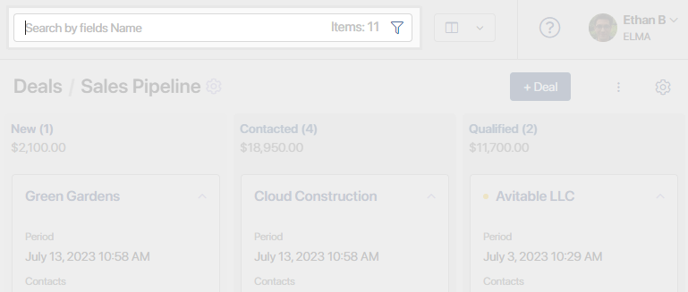
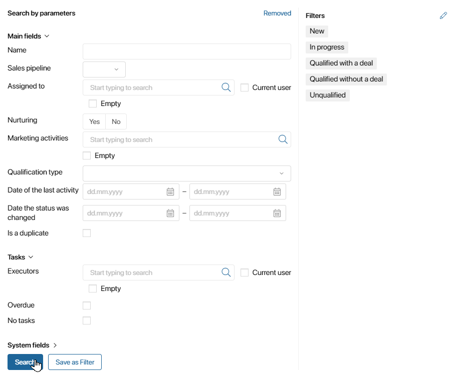
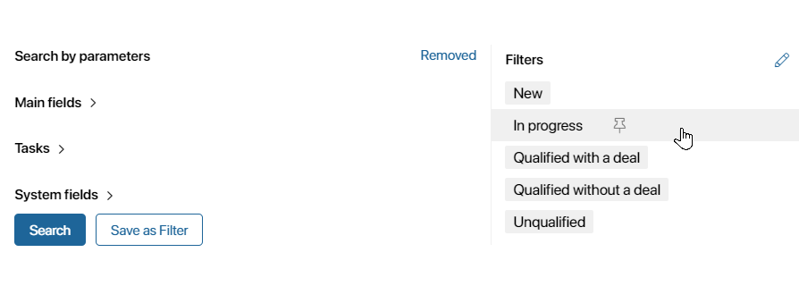
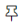
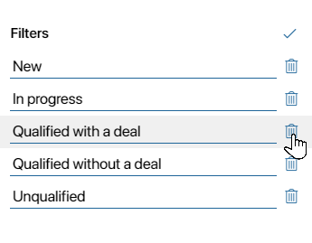

To quickly find a deal, lead, company, or other app item of the CRM workspace, use search. You can search by name, app parameters, or by using EQL365 queries.
In the Deals and Leads apps, you can search for items in a specific pipeline or across all created entries. To do this, select a pipeline or go to the All Deals or All Leads page.
To quickly find an item, enter its name in the search bar at the top of the page and press Enter on your keyboard.

To narrow your search results, you can search for items by app parameters.
To do this, click on the  icon in the search bar. In the opened form, specify the required parameters, and data about tasks related to the item, or create an EQL query to select data by conditions using operations and functions. Then click Search.
icon in the search bar. In the opened form, specify the required parameters, and data about tasks related to the item, or create an EQL query to select data by conditions using operations and functions. Then click Search.

The results will display all items matching the specified criteria. For example, you can search for a deal by responsible person, company, or planned closing date.
If you plan to use the same set of search parameters multiple times, you can save it as a filter.
Pre-configured filters
For deals and leads, there are pre‑configured search filters. They help you to quickly find items with a certain status, active or closed deals and leads, items with overdue tasks, etc.
To use a pre‑configured filter:
- Go to the app and select the name of the desired pipeline. To search for all items, open the All Deals or All Leads page.
- In the search bar, click the
 icon.
icon. - Choose a filter on the right-hand panel of the search window.

Pin a filter
If you want items to always be sorted by the specified parameters when you open the page, you can pin a pre-configured or custom filter.
To do this, hover the mouse over the filter name and click the  icon.
To unpin the filter, click the icon again.
Change the list of filters
You can delete or rename pre-configured and manually created filters. To do this, click the pencil icon in the upper right corner of the search window. Enter a new name for the filter or delete it by clicking on the trash can icon

To save your changes, click on icon.
For a detailed description of working with search and filters, see the Search and filters article. To learn how to use the EQL365 language, refer to the Search queries in the Search queries in EQL365 article.
Read more about search in the Search and filters article.
Found a typo? Select it and press Ctrl+Enter to send us feedback